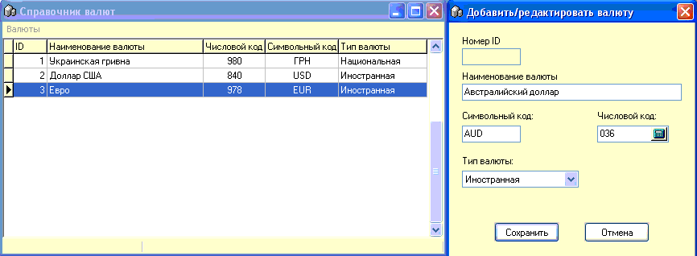
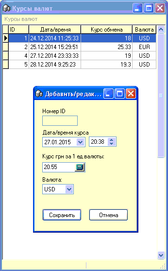
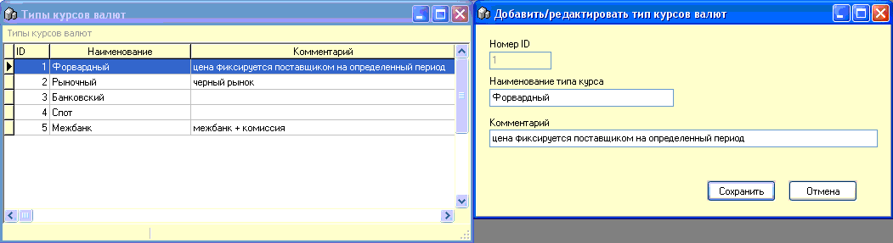

 Справочник
валют служит для хранения необходимых во взаимоотношениях с
поставщиками валютами.
Первые три валюты внесены сразу при
установке программы и их удалить нельзя.
Числовой и символьный коды обычно вносятся
согласно международного стандарта ISO-4217.

Справочник курсов валют
позволяет заносить текущие рыночные значения курсов валют по мере их
измерения. Именно из этого справочника бедет браться хронологически последний
курс нужной валюты при занесении товара в приходную накладную, если тип валюты
для данного товара отличный от форвардного.
s
Справочник типов курсов валют
служит для хранения типов установления/определения актуального на момент
прихода товара курса валюты.